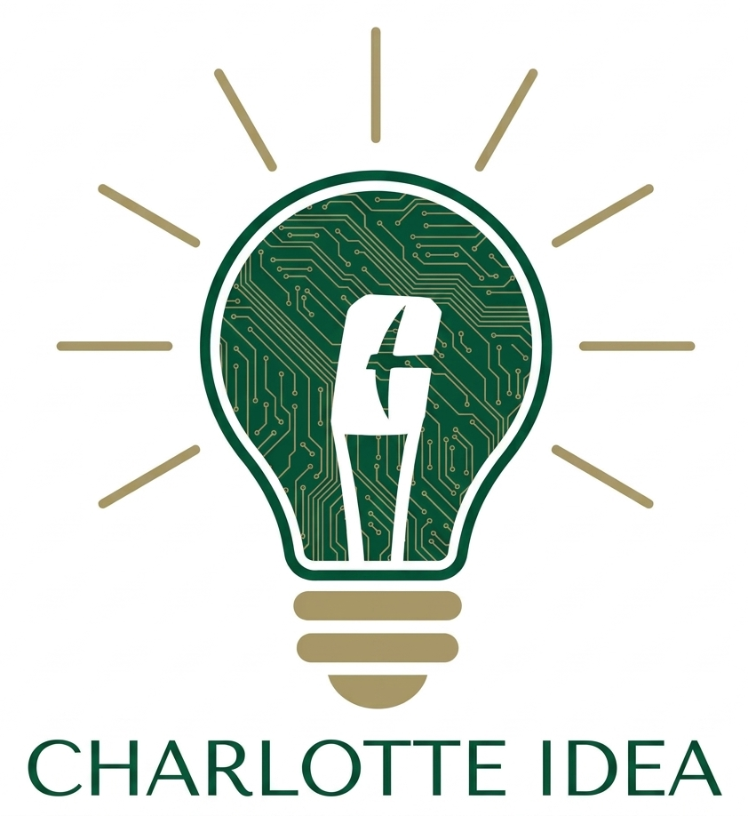

The CIDEA Lab studies how students learn and how educational data can improve their outcomes. We work in the College of Computing and Informatics at UNC Charlotte, developing analytics, AI-based tools, and methods that support instructors, programs, and the students they serve.

Our projects run across the analytics that measure learning, the AI tools students use, and the methods that keep those systems reliable and transparent.
Models and dashboards built from learning data — predicting academic risk, studying engagement, and giving instructors evidence they can act on.
Designing and studying AI-based tools that support learning, and understanding how students build the skills to use AI well.
Work on reliability, transparency, and accountability so that data-driven methods produce results educators can trust.
CIDEA brings together faculty and students from computer science and computing education to study teaching and learning with data. Each research theme is led by a faculty co-director, and much of the day-to-day work is carried out by graduate and undergraduate researchers on real projects.
Undergraduate and graduate members contribute to projects from design through publication.
Our questions come from real courses and programs at UNC Charlotte and beyond.
Lab research is supported through external grant funding in computing education.
We welcome students looking for research experience and colleagues interested in collaboration. Reach out to start a conversation.
Get in touch